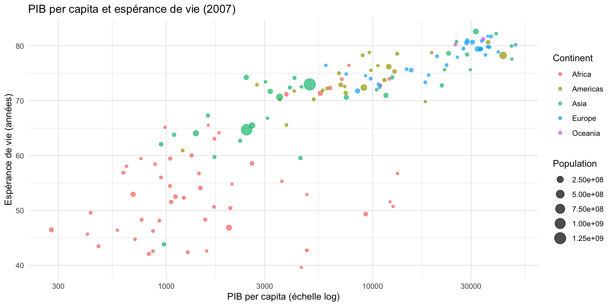
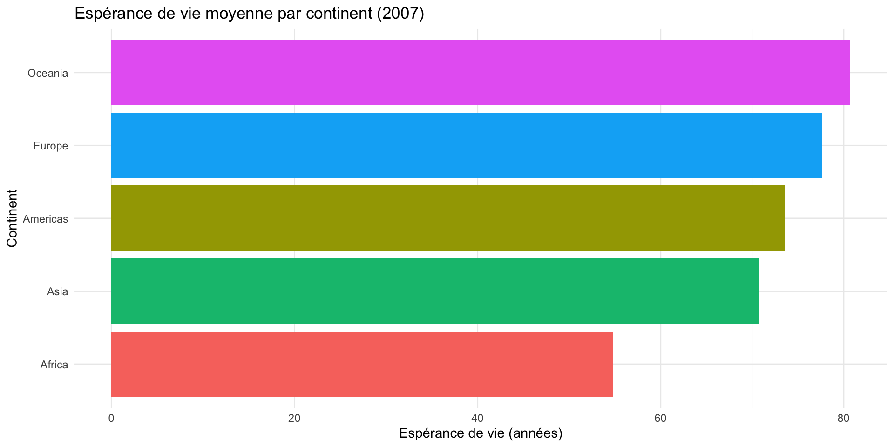
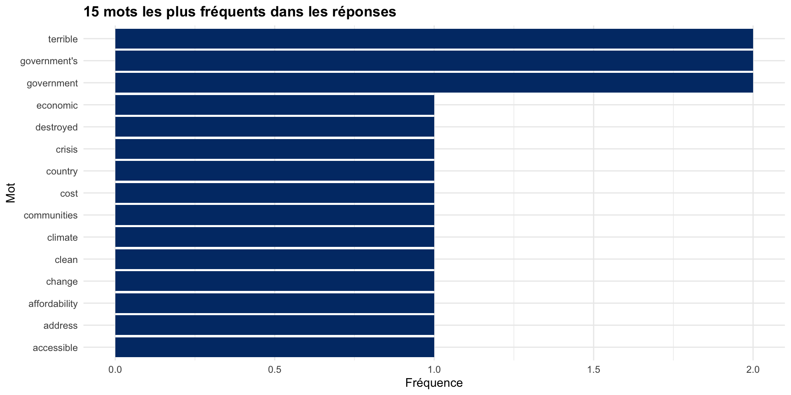
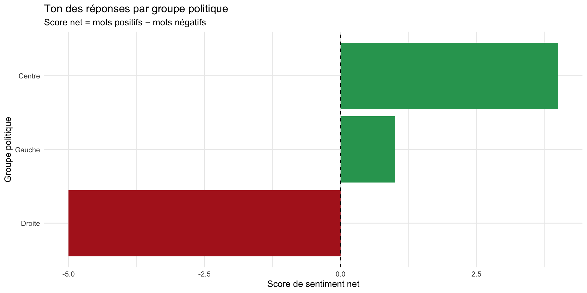
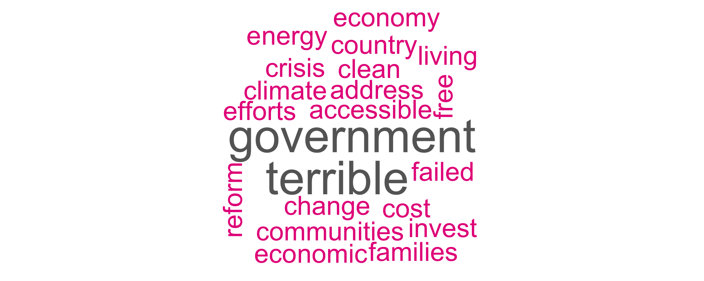
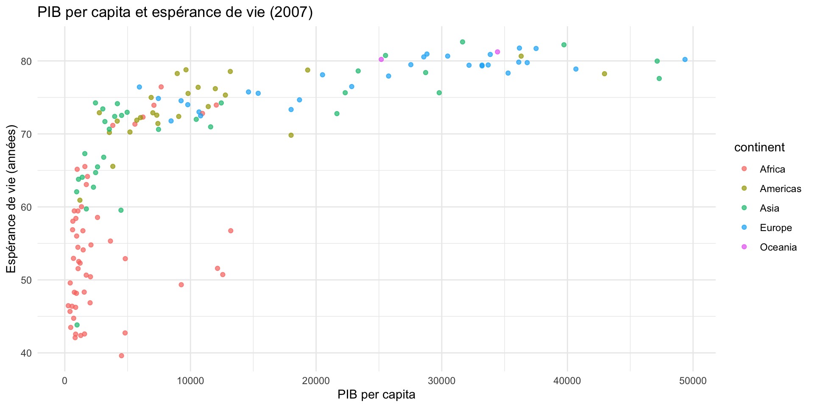
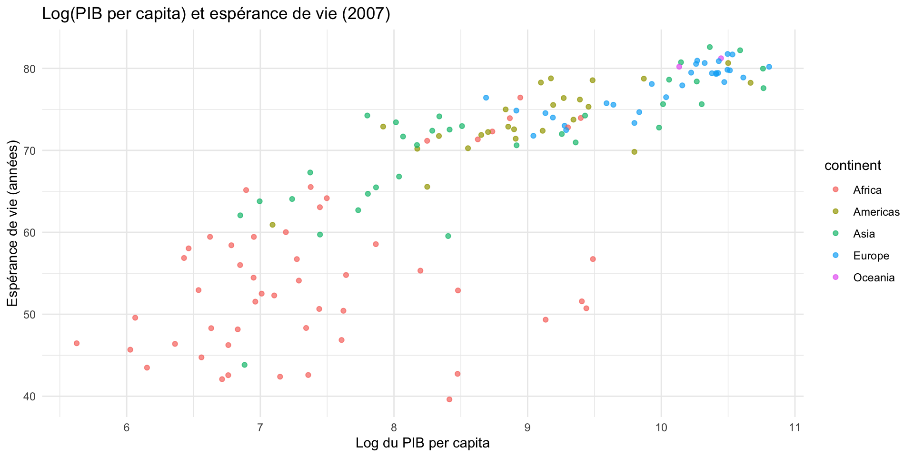
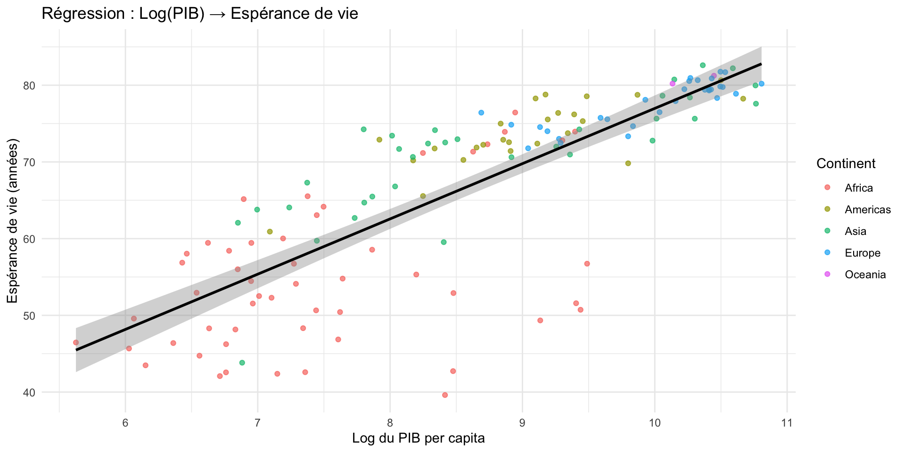
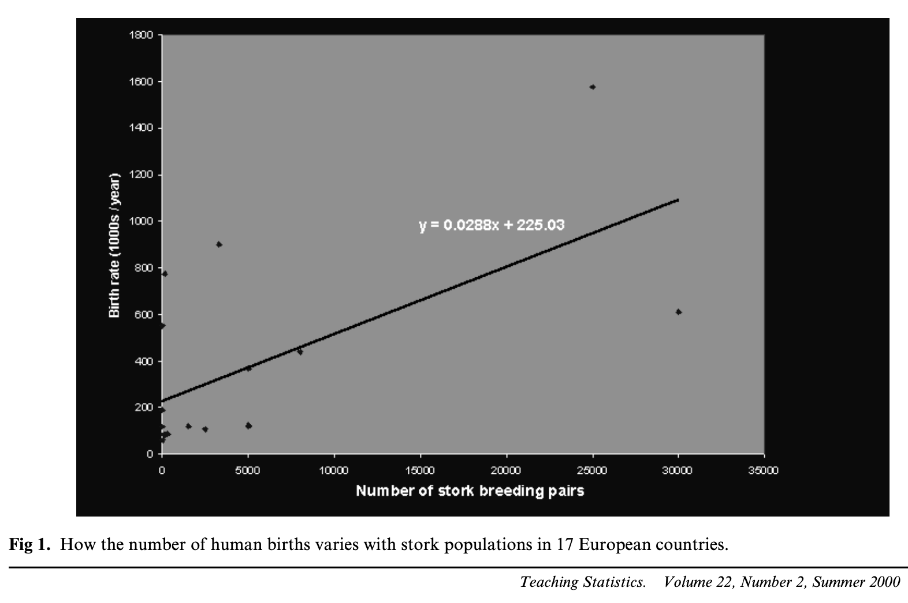

Approfondissement en analyse de données avec R
ggplot2, analyse textuelle et IA
2026-03-20
Bravo d’être là!

Confirmez votre présence!
Qui suis-je?
- Doctorant en science politique (directeur : Yannick Dufresne)
- Co-coordonnateur de la CLESSN (Chaire de leadership en enseignement des sciences sociales numériques)
- Co-coordonnateur du CAPP (Centre d’analyses des politiques publiques)
- Cocréateur de l’EIOM (École interdisciplinaire Outils & Méthodes — eiom.ca)
- Certified Scrum Master & Notion certified
- Membre du GRCP, CÉCD, OVBIA, CIEQ
Plan de la journée
9h à 12h — Formation théorique
- Rappel de la semaine passée
- Visualisation : ggplot2
- Analyse textuelle automatisée avec R
- Régression linéaire
- BONUS — R et l’IA : comment travailler intelligemment
13h à 15h — Atelier pratique (présentiel seulement)
- Travaillez avec vos propres données et questions de recherche
- Exercices disponibles sur le site de l’atelier
Rappel de la semaine passée
La semaine passée avec Étienne
Tout le contenu d’Étienne est disponible ici :
On fait un survol rapide (~30 min) pour rafraîchir les mémoires. Si vous avez besoin de revoir en détail, le site d’Étienne est là.
Une ressource incontournable
Hadley Wickham est le créateur de tidyverse — c’est lui qui a inventé ggplot2, dplyr, tidyr et la plupart des outils qu’on utilise aujourd’hui.
Son livre R for Data Science est gratuit en ligne et couvre tout le cycle de l’analyse de données :
Importer → Organiser → Transformer → Visualiser → Modéliser → Communiquer
Le chapitre Workflow: basics est un excellent point de départ pour consolider les bases — nommage des objets, conventions de style, bonnes pratiques.
R & RStudio : l’interface
4 panneaux :
- Script (en haut à gauche) — votre code
- Console (en bas à gauche) — l’exécution
- Environnement (en haut à droite) — vos objets
- Fichiers / Graphiques (en bas à droite)
Règle fondamentale :
Écrivez toujours dans le script, pas dans la console.
Ctrl + Enter (Win) / Cmd + Enter (Mac) pour exécuter une ligne.
Objets et assignation
Packages et importation
# Installer une fois, charger à chaque session
install.packages("tidyverse") # dans la console
library(tidyverse) # dans le script
# Importer un fichier CSV
mes_donnees <- read.csv("fichier.csv")
# Explorer un data frame
glimpse(mes_donnees)
names(mes_donnees)
mes_donnees$nom_colonne # accéder à une colonneLes données : Gapminder
# A tibble: 6 × 6
country continent year lifeExp pop gdpPercap
<fct> <fct> <int> <dbl> <int> <dbl>
1 Afghanistan Asia 1952 28.8 8425333 779.
2 Afghanistan Asia 1957 30.3 9240934 821.
3 Afghanistan Asia 1962 32.0 10267083 853.
4 Afghanistan Asia 1967 34.0 11537966 836.
5 Afghanistan Asia 1972 36.1 13079460 740.
6 Afghanistan Asia 1977 38.4 14880372 786.Le pipe : |>
Le pipe enchaîne les opérations. Lisez-le comme « puis ».
Raccourci : Ctrl + Shift + M (Win) / Cmd + Shift + M (Mac)
filter() — garder des lignes
# A tibble: 6 × 6
country continent year lifeExp pop gdpPercap
<fct> <fct> <int> <dbl> <int> <dbl>
1 Afghanistan Asia 2007 43.8 31889923 975.
2 Albania Europe 2007 76.4 3600523 5937.
3 Algeria Africa 2007 72.3 33333216 6223.
4 Angola Africa 2007 42.7 12420476 4797.
5 Argentina Americas 2007 75.3 40301927 12779.
6 Australia Oceania 2007 81.2 20434176 34435.select() — garder des colonnes
# A tibble: 6 × 3
country continent lifeExp
<fct> <fct> <dbl>
1 Afghanistan Asia 43.8
2 Albania Europe 76.4
3 Algeria Africa 72.3
4 Angola Africa 42.7
5 Argentina Americas 75.3
6 Australia Oceania 81.2mutate() — créer une colonne
# A tibble: 6 × 4
country pop gdpPercap pib_milliards
<fct> <int> <dbl> <dbl>
1 Afghanistan 31889923 975. 31.1
2 Albania 3600523 5937. 21.4
3 Algeria 33333216 6223. 207.
4 Angola 12420476 4797. 59.6
5 Argentina 40301927 12779. 515
6 Australia 20434176 34435. 704. arrange() — trier
# A tibble: 6 × 2
country lifeExp
<fct> <dbl>
1 Japan 82.6
2 Hong Kong, China 82.2
3 Iceland 81.8
4 Switzerland 81.7
5 Australia 81.2
6 Spain 80.9group_by() + summarise() — résumer par groupe
# A tibble: 5 × 3
continent esperance_moy nb_pays
<fct> <dbl> <int>
1 Africa 54.8 52
2 Americas 73.6 25
3 Asia 70.7 33
4 Europe 77.6 30
5 Oceania 80.7 2Revoir les exercices d’Étienne?
1. Visualisation avec ggplot2
La logique de ggplot2
ggplot2 est basé sur une grammaire des graphiques : on assemble des couches.
ggplot()— initialise le graphique avec les donnéesaes()— mappe les variables aux propriétés visuelles (x, y, couleur, taille…)geom_*()— choisit le type de figure (points, barres, lignes…)+— ajoute des couches (pas un pipe!)
On va construire ce graphique couche par couche →
Couche 1 — la toile vide

Couche 2 — geom_point()
Couche 3 — couleur et taille
Couche 4 — scale_x_log10()
Couche 5 — labs() + theme_minimal()
gapminder |>
filter(year == 2007) |>
ggplot(aes(x = gdpPercap,
y = lifeExp,
color = continent,
size = pop)) +
geom_point(alpha = 0.7) +
scale_x_log10() +
labs(
title = "PIB per capita et espérance de vie (2007)",
x = "PIB per capita (échelle log)",
y = "Espérance de vie (années)",
color = "Continent",
size = "Population"
) +
theme_minimal()
Graphique en barres : geom_col()
gapminder |>
filter(year == 2007) |>
group_by(continent) |>
summarise(esperance_moy = mean(lifeExp)) |>
ggplot(aes(x = reorder(continent, esperance_moy),
y = esperance_moy,
fill = continent)) +
geom_col(show.legend = FALSE) +
coord_flip() +
labs(
title = "Espérance de vie moyenne par continent (2007)",
x = "Continent",
y = "Espérance de vie (années)"
) +
theme_minimal()
Histogramme : geom_histogram()
Personnaliser et sauvegarder
mon_graphique <- gapminder |>
filter(year == 2007) |>
ggplot(aes(x = gdpPercap, y = lifeExp, color = continent)) +
geom_point(alpha = 0.7) +
scale_x_log10() +
theme_minimal() +
theme(legend.position = "bottom") +
labs(title = "Mon graphique")
# Sauvegarder en PNG haute résolution
ggsave("graphique.png", plot = mon_graphique,
width = 10, height = 7, dpi = 300)2. Analyse textuelle automatisée
Pourquoi en sciences sociales?
Les sciences sociales sont riches en données textuelles :
- Entrevues et groupes focaux
- Réponses ouvertes à des sondages
- Publications sur les réseaux sociaux
- Articles de journaux et discours politiques
- Documents gouvernementaux
Le problème : des centaines ou milliers de textes, impossible à analyser manuellement.
La solution : l’analyse textuelle automatisée avec R.
Deux approches complémentaires
| Approche | Outils | Usage |
|---|---|---|
| Manuelle | NVivo, Atlas.ti | Analyse qualitative fine, petits corpus |
| Automatisée | R (stringr, tidytext) | Grandes quantités de texte, patterns |
Aujourd’hui on fait de l’automatisé — mais les deux se complètent!
Nos données textuelles
# Exemple : réponses à une question ouverte de sondage sur les
# priorités politiques (traduit en anglais pour l'analyse de sentiment)
reponses <- tibble(
id = 1:8,
groupe = c("Centre", "Droite", "Centre", "Gauche",
"Centre", "Droite", "Gauche", "Droite"),
texte = c(
"The government must invest more in clean energy and protect the environment",
"The cost of living crisis is terrible, prices are too high for working families",
"Our healthcare system needs urgent reform and more funding immediately",
"I appreciate the government's efforts on climate change and housing affordability",
"Education should be free and accessible to all young people in this country",
"The economy is struggling and the government has failed to address inflation",
"We need stronger social programs and better support for vulnerable communities",
"This government's terrible policies have destroyed our economic opportunities"
)
)2.1 stringr : manipulation de texte
stringr fait partie de tidyverse — pas besoin d’installation supplémentaire.
# Les fonctions principales
texte <- "Le Parti libéral, le Parti conservateur et le Bloc québécois"
# Convertir en minuscules
str_to_lower(texte)
# Détecter un patron (retourne TRUE/FALSE)
str_detect(texte, "libéral")
# Compter les occurrences
str_count(texte, "Parti")
# Remplacer
str_replace_all(texte, "Parti", "parti")
# Extraire selon un patron
str_extract_all(texte, "Parti \\w+")stringr avec un data frame
textes_politiques <- tibble(
titre = c(
"Le Parti libéral annonce un budget déficitaire",
"Le Bloc québécois défend l'autonomie du Québec",
"Le NPD propose de hausser le salaire minimum",
"Le Parti conservateur critique les dépenses du gouvernement",
"Le Parti libéral investit dans le logement abordable"
)
)
# Compter les mentions de "Parti libéral"
textes_politiques |>
mutate(
mention_liberal = str_detect(titre, "libéral|Libéral"),
nb_mots = str_count(titre, "\\w+"),
titre_min = str_to_lower(titre)
)2.2 tidytext : tokenisation
Tokeniser = découper un texte en unités (mots, phrases, n-grammes).
# A tibble: 80 × 3
id groupe mot
1 1 Centre the
2 1 Centre government
3 1 Centre must
...Enlever les mots vides (stop words)
Les mots vides (stop words) sont fréquents mais sans signification : the, a, is, in…
Pour le français : stopwords::stopwords("fr") ou le package stopwords
Visualiser les mots fréquents
mots_propres |>
count(mot, sort = TRUE) |>
slice_head(n = 15) |>
ggplot(aes(x = reorder(mot, n), y = n)) +
geom_col(fill = "#003875") +
coord_flip() +
labs(
title = "15 mots les plus fréquents dans les réponses",
x = "Mot",
y = "Fréquence"
) +
theme_minimal() +
theme(plot.title = element_text(face = "bold"))Visualiser les mots fréquents

2.3 Analyse de sentiment
L’analyse de sentiment mesure le ton d’un texte (positif, négatif, neutre).
Principe : associer chaque mot à un score de sentiment à partir d’un lexique.
Calculer le sentiment par groupe politique
# A tibble: 3 × 4
groupe negative positive score_net
<chr> <int> <int> <int>
1 Centre 1 5 4
2 Droite 5 0 -5
3 Gauche 1 2 1Visualiser le sentiment
sentiment_par_groupe |>
ggplot(aes(x = reorder(groupe, score_net),
y = score_net,
fill = score_net > 0)) +
geom_col(show.legend = FALSE) +
scale_fill_manual(values = c("firebrick", "#2ca25f")) +
coord_flip() +
geom_hline(yintercept = 0, linetype = "dashed") +
labs(
title = "Ton des réponses par groupe politique",
subtitle = "Score net = mots positifs − mots négatifs",
x = "Groupe politique",
y = "Score de sentiment net"
) +
theme_minimal()Visualiser le sentiment

2.4 Nuage de mots (wordcloud)

3. Régression linéaire
Pourquoi la régression?
But : mesurer l’association entre une variable dépendante \(Y\) et une ou plusieurs variables indépendantes \(X\).
\[Y = \beta_0 + \beta_1 X_1 + \beta_2 X_2 + \varepsilon\]
Exemples en sciences sociales :
- Le revenu prédit-il l’intention de vote?
- Le genre influence-t-il la perception des politiciens?
- L’éducation est-elle associée à la participation citoyenne?
Étape 1 — Explorer la relation
Étape 1 — Explorer la relation

Étape 2 — Transformer en log
La relation est non-linéaire : on transforme gdpPercap en log(gdpPercap).
gapminder |>
filter(year == 2007) |>
mutate(log_pib = log(gdpPercap)) |>
ggplot(aes(x = log_pib, y = lifeExp)) +
geom_point(aes(color = continent), alpha = 0.7) +
labs(
title = "Log(PIB per capita) et espérance de vie (2007)",
x = "Log du PIB per capita", y = "Espérance de vie (années)"
) +
theme_minimal()Étape 2 — Transformer en log

Étape 3 — Ajouter la droite de régression
data_2007 |>
ggplot(aes(x = log_pib, y = lifeExp)) +
geom_point(aes(color = continent), alpha = 0.7) +
geom_smooth(method = "lm", color = "black", se = TRUE) +
labs(
title = "Régression : Log(PIB) → Espérance de vie",
x = "Log du PIB per capita", y = "Espérance de vie (années)",
color = "Continent"
) +
theme_minimal()Étape 3 — Ajouter la droite de régression

Étape 4 — lm() : mettre des chiffres
Call:
lm(formula = lifeExp ~ log_pib, data = data_2007)
Residuals:
Min 1Q Median 3Q Max
-25.947 -2.661 1.215 4.469 13.115
Coefficients:
Estimate Std. Error t value Pr(>|t|)
(Intercept) 4.9496 3.8577 1.283 0.202
log_pib 7.2028 0.4423 16.283 <2e-16 ***
---
Signif. codes: 0 '***' 0.001 '**' 0.01 '*' 0.05 '.' 0.1 ' ' 1
Residual standard error: 7.122 on 140 degrees of freedom
Multiple R-squared: 0.6544, Adjusted R-squared: 0.652
F-statistic: 265.2 on 1 and 140 DF, p-value: < 2.2e-16Lire les résultats :
- Estimate : l’effet de X sur Y
- p-value (
Pr(>|t|)) : significativité — cherchez les* - R² : variance expliquée (0 à 1)
Étape 5 — Régression multiple
Call:
lm(formula = lifeExp ~ log_pib + continent, data = data_2007)
Residuals:
Min 1Q Median 3Q Max
-19.4917 -2.3146 -0.0432 2.5498 14.8818
Coefficients:
Estimate Std. Error t value Pr(>|t|)
(Intercept) 20.1376 4.0332 4.993 1.79e-06 ***
log_pib 4.6308 0.5274 8.780 6.14e-15 ***
continentAmericas 11.6942 1.6546 7.068 7.46e-11 ***
continentAsia 10.1144 1.4761 6.852 2.31e-10 ***
continentEurope 11.2682 1.8936 5.951 2.14e-08 ***
continentOceania 12.9293 4.5211 2.860 0.00491 **
---
Signif. codes: 0 '***' 0.001 '**' 0.01 '*' 0.05 '.' 0.1 ' ' 1
Residual standard error: 5.929 on 136 degrees of freedom
Multiple R-squared: 0.7674, Adjusted R-squared: 0.7588
F-statistic: 89.72 on 5 and 136 DF, p-value: < 2.2e-16Chaque coefficient = effet en contrôlant pour toutes les autres variables.
Étape 6 — Comparer avec modelsummary
modelsummary exporte aussi en Word, PDF, Excel — parfait pour vos articles.
Étape 6 — Comparer avec modelsummary
| Modèle simple | Modèle multiple | |
|---|---|---|
| + p < 0.1, * p < 0.05, ** p < 0.01, *** p < 0.001 | ||
| (Intercept) | 4.950 | 20.138*** |
| (3.858) | (4.033) | |
| log_pib | 7.203*** | 4.631*** |
| (0.442) | (0.527) | |
| continentAmericas | 11.694*** | |
| (1.655) | ||
| continentAsia | 10.114*** | |
| (1.476) | ||
| continentEurope | 11.268*** | |
| (1.894) | ||
| continentOceania | 12.929** | |
| (4.521) | ||
| Num.Obs. | 142 | 142 |
| R2 | 0.654 | 0.767 |
| R2 Adj. | 0.652 | 0.759 |
| AIC | 964.5 | 916.3 |
| BIC | 973.4 | 937.0 |
| Log.Lik. | -479.260 | -451.167 |
| RMSE | 7.07 | 5.80 |
Deux types de variables
Catégorielles → as.factor() (religion, niveau d’éducation…)
Numériques → as.numeric() (âge, revenu, score…)
Corrélation ≠ causalité

Nombre de naissances ~ nombre de cigognes par pays (p = 0.008). Pas de causalité : variable confondante = taille du pays.
BONUS : R et l’IA
La révolution (et ses limites)
L’IA peut écrire du code R.
Mais elle peut aussi se tromper.
Votre travail : comprendre et valider.
La règle d’or
« Pour utiliser l’IA avec R, il faut comprendre R. »
- L’IA génère du code plausible, pas toujours correct
- Elle ne connaît pas vos données spécifiques
- Elle peut utiliser des fonctions obsolètes ou mal adaptées
- Elle peut inventer des fonctions qui n’existent pas (hallucinations)
La bonne nouvelle : avec les bases solides que vous avez, vous pouvez lire, comprendre et corriger du code généré par IA.
RStudio et l’IA : les limites
RStudio est excellent pour apprendre R, mais son intégration IA est limitée :
- Pas d’autocomplétion IA native
- Pas de suggestion de code en temps réel
- Le plugin Copilot pour RStudio est expérimental et instable
Outils gratuits pour les étudiants 🎓
GitHub Copilot
IA dans l’éditeur — complétion de code en temps réel.
GitHub Student Developer Pack — compte GitHub avec adresse universitaire → Copilot + dizaines d’outils gratuits.
Google Gemini
Assistant pour générer, expliquer et déboguer du code.
Google Workspace for Education — Gemini Advanced souvent inclus. Sinon : gemini.google.com gratuit.
DataCamp
Cours interactifs R, Python, SQL, stats et ML — directement dans le navigateur.
Le workflow avec l’IA
1. Formuler une demande précise
Contexte : j'ai un data frame R avec
les colonnes "pays", "annee", "pib",
"esperance_vie" et "continent".
Tâche : avec tidyverse, crée un nuage
de points montrant la relation entre
pib (axe x, échelle log) et
esperance_vie (axe y), coloré par
continent, pour l'année 2007 seulement.2. Lire le code avant de l’exécuter
Posez-vous ces questions :
- Est-ce que je reconnais les fonctions?
- Le nom des colonnes correspond-il à mes données?
- Y a-t-il des
install.packages()? - Ça fait bien ce que je veux?
3. Exécuter ligne par ligne
Pas tout d’un coup! Ligne par ligne pour repérer les erreurs.
4. Corriger et adapter
Un cadeau! 🎁
Abonnement DataCamp gratuit 🎁
Des centaines de cours en R, Python, SQL, statistiques et science des données — gratuit pour vous.
Vos ressources essentielles
Apprendre R en faisant :
- DataCamp — cours interactifs R, Python, SQL (accès gratuit via le lien partagé)
- swirl — tutoriels interactifs dans RStudio
- R for Data Science — LE livre, gratuit en ligne (Hadley Wickham)
- Text Mining with R — analyse textuelle, gratuit en ligne
Aide rapide :
- Cheatsheet dplyr
- Cheatsheet ggplot2
- Stack Overflow — communauté R
IA + R :
Le contenu de cet atelier est sur GitHub
Vous y trouverez :
- Ces slides (HTML)
- Le script R pour l’atelier pratique (
exercices.R) - Les données utilisées
L’EIOM — notre école de méthodes
- Interdisciplinaire : sciences sociales, droit, gestion…
- 5 éditions depuis 2020
- 5 jours intensifs, 3 crédits
- Prochaine édition à l’automne
13h à 15h : Atelier pratique
Merci!
Des questions?
Adrien Cloutier
adrien.cloutier.1@ulaval.ca
adriencloutier.com


⬅ Accueil · FSS — Université Laval — 20 mars 2026
Comment fonctionne l’atelier
Présentiel seulement
exercices.Rdepuis GitHubVous avez vos propres données?
Profitez-en pour les explorer avec les outils d’aujourd’hui. Je vous aide à adapter le code à votre contexte.
Les exercices couvrent :